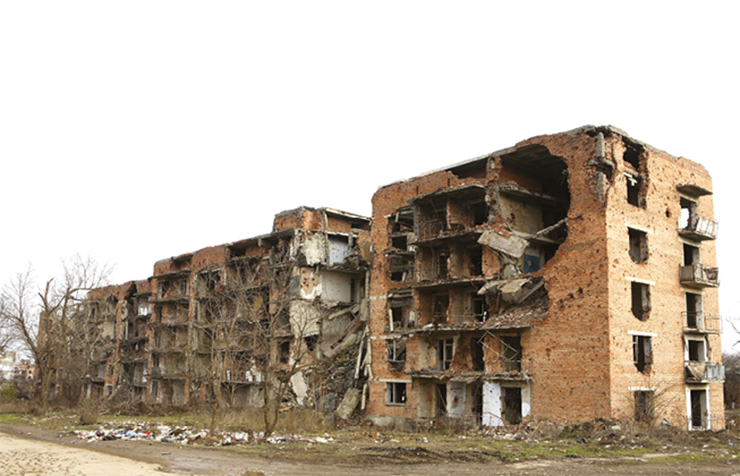

Kremlin, sede do Poder Executivo da Federação Russa.
mikie11/iStockphoto.com
A dissolução da União Soviética, no início da década de 1990, levou à formação de 15 novos países. A Federação Russa, ou apenas Rússia, um desses países, é considerada a maior herdeira do Estado sovié-tico. Uma prova disso é a concentração do antigo arsenal militar e nuclear soviético sob seu poder. Além disso, a Rússia, por meio de seu governo sediado em Moscou, exerce grande influência sobre os países que formavam a União Soviética.
Nos anos que se seguiram ao fim do regime socialista soviético, a leitura que se fazia era que a Rússia faria parte de um grupo secundário de potências, facilmente subjugáveis às normas da Nova Ordem Mundial. Após os anos 2000, no entanto, o governo russo recuperou grande parte de seu poder econômico e político, inclusive nas relações internacionais, colocando-se, atualmente, como um importante agente na política global.
- Quais são os principais fatores que garantem à Federação Russa um importante papel na política mundial atual?
- Como a Rússia se coloca, atualmente, na relação com as principais potências mundiais?
Neste capítulo serão abordadas as habilidades EM13CHS201, EM13CHS204 e EM13CHS603.
A ex-União Soviética
Como vimos no capítulo 2, a União das Repúblicas Socialistas Soviéticas (URSS) extinguiu-se oficialmente no final de 1991. A difícil decisão, acertada entre alguns representantes da elite política, decorreu de crises econômicas e políticas que vinham acentuando-se desde o início dos anos 1980.
Em termos territoriais, a dissolução soviética significou a formação de 15 novas repúblicas independentes. A Federação Russa é a principal herdeira do poder soviético, tanto em recursos territoriais como no poderio nuclear e na capacidade de exercer poder sobre as ex-repúblicas soviéticas. Quanto a estas últimas, algumas se distanciaram rapidamente da influência de Moscou (capital da antiga URSS e atual capital da Rússia), ao passo que outras permaneceram ligadas a ela.
É preciso lembrar que, antes da formação da União Soviética, as repúblicas, que hoje são países independentes, eram partes do Império Russo. Esse império começou a se formar no século XVI, com processos expansionistas como o empreendido durante os governos de Ivan, o Terrível (1547-1584); Pedro, o Grande (1682-1725); e Catarina, a Grande (1762-1796). O resultado desses movimentos foi a ascensão do Império Russo, no início do século XIX, ao posto de maior império do mundo em terras contínuas.
Mesmo a revolução socialista, já no século XX, não eliminou a dominação russa sobre os outros povos do antigo império, apesar de ter mudado sua forma e suas justificativas. Considerando a longa história do Império Russo e, depois, da URSS, é preciso analisar com cuidado e atenção a independência das 15 ex-repúblicas. Afinal, a Rússia ainda exerce poder e domínio sobre o que se tornou a área de influência da antiga URSS.
As ex-repúblicas soviéticas
O número de países é relativamente reduzido quando se considera a diversidade étnico-religiosa e de nacionalidades existentes na URSS. Oficialmente registradas e reconhecidas eram mais de cem, entre as quais se destacavam as 15 titulares , ou seja, que davam nome às repúblicas e se tornaram os 15 países.
Para facilitar o estudo dessa diversidade, agregando nações e regiões com características físicas e sociopolíticas parecidas, vamos dividir os 15 países em 4 grupos. A República Russa, hoje Federação Russa, será tratada à parte, por causa de sua importância na geopolítica atual e de seu papel de influência sobre muitos desses outros novos países.
Fonte: Instituto Brasileiro de Geografia e Estatística. Atlas geográfico escolar . Rio de Janeiro: IBGE, 2018. p. 43 e 47.
Estados Bálticos
Estônia, Letônia e Lituânia são conhecidas como estados bálticos, pois se localizam às margens do Mar Báltico. Até o século XVIII, esses países eram política e culturalmente próximos à Finlândia e à Alemanha até serem incorporados pelo Império Russo. No período entre guerras, conseguiram se manter independentes. Durante a Segunda Guerra, os três países foram ocupados por tropas nazistas. Com a derrota alemã no conflito, Estônia, Letônia e Lituânia, contra suas vontades, foram dominadas pela URSS.
Diante do histórico de autonomia e de incorporação tardia à URSS, as três repúblicas bálticas se caracterizavam por uma insatisfação acima da média em relação ao modelo político e econômico imposto por Moscou. Dessa forma, ainda em 1988, três anos antes da desintegração soviética, lituanos, estonianos e letões foram os primeiros a dar início à formação de grupos políticos para lutar pela independência em relação aos russos. Depois do fim da URSS, seu afastamento em relação a Moscou foi imediato. Os vínculos históricos e culturais com a Finlândia e a Alemanha facilitaram seu ingresso na União Europeia, na Zona do Euro e no Espaço Schengen.
Fonte: Instituto Brasileiro de Geografia e Estatística. Atlas geográfico escolar . Rio de Janeiro: IBGE, 2018. p. 43.
Leste Europeu
O Leste Europeu é uma região bastante ampla, envolvendo países que não eram parte da URSS, apesar de estarem sob sua influência direta durante a Guerra Fria, como a Polônia e a Tchecoslováquia. Em relação às ex-repúblicas soviéticas, estavam situadas no Leste Europeu Belarus (também conhecida como Bielorrússia), Ucrânia e Moldávia.
A Moldávia é um dos países mais pobres da Europa, com baixos valores de PIB e IDH, e uma economia baseada na agricultura e nos serviços. A Ucrânia e Belarus, apesar de também apresentarem padrões de vida relativamente baixos para a realidade europeia, herdaram parte do parque industrial e de áreas de cultivo agrícola da URSS.
Fonte: Instituto Brasileiro de Geografia e Estatística. Atlas geográfico escolar. Rio de Janeiro: IBGE, 2018. p. 43.
Ucrânia, particularmente, apresenta um setor industrial bastante diversificado, o que se deve, em parte, à grande disponibilidade de recursos naturais, como minério de ferro, carvão e manganês. Entre os segmentos industriais de destaque estão os setores aeroespacial, de aço e de eletrônicos. A agricultura tem destaque, por causa do solo fértil (chernossolo) e do relevo plano, o que faz do país um relevante produtor e exportador de trigo.
Após o fim da URSS, a Ucrânia se comprometeu a entregar à Rússia o arsenal nuclear que tinha herdado dos tempos soviéticos. O país cumpriu a promessa ao longo da década de 1990. Mas, segundo estudiosos, a Ucrânia tem condições de se tornar uma potência nuclear, por ter acesso à tecnologia e à matéria-prima, vinda de usinas nucleares ainda em funcionamento em seu território. Essa possibilidade é temida, especialmente por causa da instabilidade política pela qual o país tem passado nos últimos anos.
Belarus, ao contrário da Ucrânia, é mais alinhada à Rússia, apesar de uma porcentagem menor de sua população declarar-se russa – em comparação com a Ucrânia. Em geral, o idioma russo é mais utilizado do que o idioma nacional, o bielorrusso.
O presidente do país, Alexander Lukashenko (1954-), que está no poder desde 1994, assinou um acordo de união com a Rússia, segundo o qual seriam eliminadas as tarifas alfandegárias e as barreiras à circulação de pessoas, o que já foi feito. Além disso, o acordo prevê a unificação das moedas, dos hinos nacionais, das bandeiras e do sistema eleitoral, criando uma espécie de Estado unido. Esses níveis mais profundos de integração ainda estão em aberto e encontram apoiadores e adversários entre a população local.
Cáucaso
O Cáucaso é uma região montanhosa localizada entre os mares Cáspio e Negro, no limite entre a Federação Russa, ao norte, e o Oriente Médio (Turquia e Irã), ao sul. Atualmente, existem três países amplamente reconhecidos ali: Geórgia, Armênia e Azerbaijão. A grande diversidade étnico-religiosa e as disputas territoriais fazem desta uma das áreas mais instáveis da antiga URSS.
Fonte: Instituto Brasileiro de Geografia e Estatística. Atlas geográfico escolar . Rio de Janeiro: IBGE, 2018. p. 43.
A diversidade demográfica do Cáucaso está relacionada à história da região. Ela foi ocupada e disputada por diferentes povos. A Armênia, por exemplo, que originalmente se estendia para o Ocidente, em terras hoje ocupadas pela Turquia, foi o primeiro Estado a assumir o cristianismo como religião oficial, ainda antes de Roma. Posteriormente, as terras da região foram disputadas pelos impérios Russo e Otomano, o que levou à formação de comunidades cristãs ortodoxas e muçulmanas.
Montanhas da cordilheira do Cáucaso, no Azerbaijão.
tenkl/Shutterstock.com
Atualmente, é uma região pobre, mas de grande importância estratégica, uma vez que por ela passam dutos que transportam gás e petróleo do Cazaquistão, do Azerbaijão e da Rússia para o Mar Negro, de onde seguem para a Europa. Nesse contexto, a instabilidade política, marcada por movimentos separatistas e pela atuação de grupos religiosos extremistas, é uma constante preocupação para Moscou.
Ásia Central
A Ásia Central é uma região de clima seco e vegetação rasteira, comumente chamada de estepe. Essa condição está relacionada à sua localização, cercada pelas cordilheiras montanhosas ao sul (em particular a do Himalaia), configuração que dificulta a entrada de chuvas.
Durante a Primeira Guerra Mundial (1914-1918), a minoria armênia foi acusada de se aliar ao Império Russo, que lutava contra os otomanos. A partir daí os armênios passaram a ser tratados como inimigos internos e foram perseguidos pelas autoridades otomanas, o que provocou a morte de 1,5 milhão de pessoas e a diáspora (fuga) de outros milhões, levando à formação de comunidades armênias em diversos países do mundo, incluindo o Brasil.
O evento é reconhecido atualmente, de forma ampla, como o genocídio armênio . Essa ação é considerada um crime contra a humanidade. O governo turco, herdeiro do Império Otomano, nunca reconheceu o caso dos armênios como um genocídio.
A Ásia Central é uma região de ocupação esparsa, cuja grande importância econômica e estratégica era o fato de ser uma ligação por terra entre, de um lado, o Extremo Oriente, principalmente a China, e, de outro, a Pérsia, o Império Otomano e a Europa. Por essa região passava a famosa Rota da Seda , importante conexão comercial, cultural e tecnológica entre o Ocidente e o Oriente, principalmente antes das Grandes Navegações.
Estepes no Cazaquistão.
Aureliy/Shutterstock.com
Após ter sido dominada por diferentes impérios, inclusive o de Alexandre (356 a.C.-323 a.C.), a região passou séculos sem controle político centralizado, o que, juntamente com o desenvolvimento das rotas marítimas, levou à decadência do comércio na Rota da Seda. No século XIX, ela foi alvo de disputa entre o Império Russo e o Britânico, tendo sido dominada pelo primeiro e sendo dividida, após a formação da União Soviética, em cinco repúblicas: o Cazaquistão, o Uzbequistão, o Turcomenistão, o Tadjiquistão e o Quirguistão. A terminação comum a todos esses nomes indica a origem persa de suas denominações. O sufixo “ stan ” (“stão” em português) significa “terra dos”, indicando o povo predominante em cada um desses países.
Samarcanda, no Uzbequistão, cidade central da Rota da Seda fundada há mais de dois mil anos.
Ekaterina McClaud/Shutterstock.com
Diante do controle soviético, a região voltou a ser estratégica por diferentes motivos. Vastas reservas de gás, petróleo, carvão, ferro, urânio e outros minérios foram descobertas, sobretudo no Cazaquistão, hoje um importante exportador de petróleo, com cidades modernas e uma das economias mais desenvolvidas da antiga URSS.
Mesmo sendo uma região semiárida, passou a ser utilizada pelos soviéticos como área de extensão de cultivos agrícolas, com destaque para as plantações de algodão. Para possibilitar essa atividade, canais de irrigação foram construídos ao longo do século XX, captando a água de rios como o Amu Dária e o Sir Dária, afluentes do Mar de Aral, um grande lago salgado localizado entre os territórios do Uzbequistão e do Cazaquistão.

Fonte: Instituto Brasileiro de Geografia e Estatística. Atlas geográfico escolar . Rio de Janeiro: IBGE, 2018. p. 47.
Os canais de irrigação elevaram o Uzbequistão ao posto de um dos maiores produtores de algodão do mundo, porém causaram um processo de redução drástica no volume do Mar de Aral, que entrou em colapso no final do século XX, reduzido, atualmente, a uma pequena parcela de sua extensão original. Além disso, há anos o governo do país é acusado de utilizar trabalho forçado dos cidadãos do país para a colheita do algodão.
Outros dois elementos que fizeram da Ásia Central uma região estratégica para os soviéticos foram a base de lançamentos de foguetes no Cazaquistão, próximo à linha do Equador, o que torna os lançamentos mais simples e mais baratos, e centenas de testes com bombas atômicas durante a Guerra Fria, nas áreas despovoadas da região. A Ásia Central permanece fortemente aliada à Rússia, e os governos ditatoriais seguem as orientações políticas vindas de Moscou. A importância da região tende a crescer ainda mais com os planos chineses de reestabelecer a Rota da Seda. Esse fato, somado a outros como a presença de importantes reservas de recursos minerais, faz com que a região também seja observada com atenção pelas potências ocidentais, preocupadas com a preponderância geopolítica russa nessa área.
Ponto de vista da Geografia
Um dos autores clássicos da Geografia Política foi o britânico Halford John Mackinder (1861-1947), que desenvolveu a teoria do poder estratégico sobre o espaço a partir da dominação do que ele chamou de heartland , que poderíamos traduzir livremente como “o coração do território”. O domínio de uma área central, como é o caso da Ásia Central, possibilitaria, segundo o geógrafo, o controle dos fluxos de comércio, de pessoas e de tropas entre as áreas que estão nas bordas. Pensando que nessas áreas da Ásia Central estão, de um lado, a China e, de outro, a União Europeia, parece que a Rússia tem sob sua influência uma das áreas mais estratégicas para a economia mundial nas próximas décadas.
Federação Russa
A Rússia, cujo nome oficial é Federação Russa, é o maior país do mundo, com um território de aproximadamente 17 milhões de km² e grande extensão longitudinal, estendendo-se por 11 fusos horários. Sua população, no entanto, é relativamente pequena, de aproximadamente 140 milhões de habitantes, majoritariamente concentrada na porção oeste do país. A Rússia possui trechos de seu território na Europa e na Ásia, e os Montes Urais dividem o lado europeu do lado asiático, que é escassamente povoado.
O território russo é rico em petróleo, gás natural e minério de ferro, recursos importantes para a industrialização do país. A disponibilidade de terras férteis proporciona áreas para cultivo de cereais e legumes, assim como para criação de gado. Na região da Sibéria, que engloba a maior parte da Rússia asiática, uma grande floresta de coníferas abastece a indústria madeireira.
Demografia e organização política
Herdeiro do Império Russo, o país possui uma grande diversidade étnica e linguística, mesmo considerando que cerca de 80% de sua população seja legitimamente russa. Outros grupos com participação importante são os tártaros, os ucranianos, os chechenos e os armênios; existem, ainda, mais de cem minorias linguísticas espalhadas pelo território. Em termos religiosos, predominam os cristãos ortodoxos e os muçulmanos, mas há também uma grande parcela que se declara sem religião, o que pode ser visto como uma herança do período soviético, que procurou eliminar a religiosidade no país.
O país se organiza em torno de uma federação; o Estado está estruturado em três poderes: Executivo, Legislativo e Judiciário. As unidades políticas do sistema federativo apresentam diferentes níveis de autonomia, com 85 divisões federais, que são classificadas segundo o grau de autonomia. Os dois tipos mais comuns são os oblasts (algo próximo aos estados brasileiros) e as repúblicas autônomas (que possuem mais liberdade, mas permanecem subordinadas ao governo federal).
Fonte: PARFITT, Tom. “Save Mother Russia: Putin spends £6.4bn to make more babies”. The Times , 30. nov. 2017. Disponível em: <https://www.thetimes.co.uk/article/save-mother-russia-putin-spends-6-4bn-to-make-more-babies-crtfzdqhd>. Acesso em: 5 ago. 2021.
O governo federal russo tem como base o sistema semipresidencialista; o presidente é eleito diretamente pela população a cada seis anos e o primeiro-ministro é escolhido pelo presidente. O parlamento russo é dividido em duas câmaras, a Duma e o Soviete da Federação . A primeira é formada por deputados eleitos diretamente pelo povo; a segunda é composta de representantes escolhidos pelas divisões federais.
A questão demográfica é uma preocupação para o país porque a população russa é pequena quando comparada às suas dimensões territoriais, o que compromete a demanda por mão de obra e o futuro da economia. A população apresenta uma tendência de queda que deve se aprofundar nas próximas décadas.
O declínio populacional começou a ganhar contrastes mais claros a partir da década de 1990, quando o fim da União Soviética gerou uma profunda crise econômica, que aumentou as taxas de mortalidade, diminuiu a natalidade e obrigou muitos russos a emigrarem. Mais recentemente, no período pós-anos 2000, o governo passou a adotar medidas de estímulo à natalidade; além disso, facilitou o acesso à cidadania russa para os imigrantes vindos de países da ex-URSS.
Fonte: Population Pyramid . Disponível em: <https://sites.google.com/a/k12ahisd.net/russia-parker-duke-4/home/population-pyramid>. Acesso em: 5 ago. 2021.
Outro problema demográfico enfrentado pela Rússia é o envelhecimento populacional, cuja principal causa também é a baixa fecundidade. Como sabemos, o valor de reposição demográfica, que garante a manutenção do tamanho da população, gira em torno de 2 filhos por mulher. A retomada da economia e os programas de estímulo promovidos pelo governo produziram uma relativa recuperação do número de nascimentos por mulher, levando a taxa de fecundidade a se aproximar de 1,8 em 2019.
Fonte: LATSA, Alexandre. “Russian demographics, winter or spring, depending on wether the analysis comes from the West or from Russia”. Trad. Mireille Roddier. Dissonance . Disponível em: <http://alexandrelatsa.ru/2014/10/russian-demographics-winter-or-spring-depending-on-wether-the-analysis-comes-from-the-west-or-from-russia/>. Acesso em: 5 ago. 2021.
A tendência para as próximas décadas é que a população envelheça consideravelmente, situação que pode representar dificuldades para a economia, como a escassez de mão de obra e o aumento dos custos com aposentadoria e sistemas de saúde. Essa condição já é uma realidade em países da Europa Ocidental e no Japão. No entanto, é preciso lembrar que esses países apresentam níveis de desenvolvimento econômico superiores aos russos, além de serem polos de atração de imigrantes, o que colabora para reduzir o déficit populacional.
Fonte: “Russia”. Population Pyramid . Disponível em: <https://www.populationpyramid.net/pt/rússia/2017/>. Acesso em: 5 ago. 2021.
Economia e política da Rússia pós-soviética
A Federação Russa surgiu como país independente em 1991, após o fim da União Soviética. Boris Yeltsin (1931-2007), líder russo que passou a fazer dura oposição ao governo e à unidade da URSS, representava a elite política que desejava a radicalização das reformas iniciadas por Gorbachev ( perestroika e glasnost ) e a transição para o capitalismo, inserindo a Rússia na globalização econômica nos moldes liberais.
Ao longo da década de 1990, Yeltsin pôs em prática esse projeto realizando privatizações e diminuindo o papel do Estado na economia. O programa de privatizações realizou uma grande transferência da riqueza estatal para um grupo privilegiado de empresários, os quais se tornaram bilionários em poucos anos, formando a chamada oligarquia russa .
Durante o governo de Yeltsin, a economia do país sofreu com grandes ondas de estagnação, desemprego, queda da produção e aumento da pobreza. Os problemas atingiram patamares graves, resultando em retrocesso da expectativa de vida e aumento da taxa de mortalidade.
Em termos políticos, Yeltsin também não foi bem-sucedido. Sua reeleição dependeu do apoio maciço dos oligarcas, o que aumentou as suspeitas de corrupção e as acusações de falta de transparência na imprensa. Além disso, em termos de política externa, a importância do país teve um claro declínio. A submissão do governo de Moscou a organizações de controle ocidental, como o FMI e o Banco Mundial, era alarmante.
A Era Yeltsin representou um período de grande declínio social, econômico e político para os russos, principalmente para as gerações mais velhas, que tinham vivido durante os anos soviéticos, nos quais, apesar de toda a opressão e dos problemas econômicos, o país era tido como a segunda maior potência mundial. Ao mesmo tempo, para os mais novos, a década de 1990 tinha representado desemprego, frustração e desesperança.
No ápice desse contexto negativo, em 1999, Boris Yeltsin escolheu um novo primeiro-ministro para ajudá-lo a governar o país. Tratava-se do jovem Vladimir Putin (1952-), ex-funcionário da KGB (agência de segurança e espionagem da antiga URSS), que havia tido uma carreira política meteórica durante a década de 1990 e que rapidamente reverteu, de modo relativo, o fracasso russo da Era Yeltsin.
Sem-teto em acampamento no centro de Moscou, em 1990.
Peter Turnley/Corbis/VCG/Getty Images
A ascensão de Putin começou com o comando, como primeiro-ministro, de uma bem-sucedida campanha militar na Chechênia; o estabelecimento de um rígido controle sobre os oligarcas, que tinham submetido o governo de Yeltsin aos seus interesses; e o controle sobre a mídia, a princípio no que se referia às notícias sobre a campanha militar na Chechênia e, posteriormente, à maneira de divulgar as notícias sobre seu próprio governo.
Paralelamente a essas mudanças, Putin foi favorecido pelo aumento dos preços do petróleo e do gás natural. Como a Rússia é um grande produtor desses recursos, o governo do país conseguiu acumular capital, utilizando-o para retomar os investimentos em infraestrutura e no setor militar, levando a economia do país a retomar o crescimento, gerar empregos, aumentar salários, diminuir a pobreza, a mortalidade e a emigração e, portanto, o decréscimo populacional que havia marcado o final do século XX russo.
Fonte: “Life in Vladimir Putin’s Russia explained in 10 charts”. BBC , 12 mar. 2018. Disponível em: <https://www.bbc.com/news/world-europe-43210257>. Acesso em: 5 ago. 2021.
Ao promover as mudanças, o jovem primeiro-ministro tornou-se, ao longo do tempo, um importante e influente líder russo, tendo sido eleito presidente em 2000 e reeleito em 2004. Em 2008, quando não poderia se reeleger, influenciou a ascensão de Dmitri Medvedev (1965-) à presidência, um aliado que escolheu Putin como primeiro-ministro. Em 2012, houve reformas políticas que aumentaram o mandato presidencial para 6 anos. Putin se elegeu mais duas vezes para a presidência (2012 e 2018), devendo permanecer no cargo até 2024.
O poder político de Putin, no entanto, deve sempre ser avaliado considerando-se o controle sobre a mídia e a aliança com os oligarcas. Além disso, ao longo dos anos, o governo Putin fez reformas que diminuíram a autonomia dos governos dos oblasts e das repúblicas autônomas , inclusive eliminando, por certos períodos, as eleições diretas para os cargos de governadores dessas unidades federais.
Além do relativo sucesso econômico, Putin vem construindo sua hegemonia política com base em ideias que unem parte do povo, como as que cercam o nacionalismo e o tradicionalismo russos. O nacionalismo é baseado na revalorização da cultura russa. Nesse contexto, há um elemento importante, que é a ideia, assumida pelo governo, de defender o “Russkiy Mir” (mundo russo), que inclui não apenas os cidadãos do país, mas também outros milhões de pessoas que falam a língua russa e que são descendentes de russos, mas que vivem hoje em países vizinhos, que pertenciam à URSS.
Patriarca Cirilo I, à esquerda, e Vladimir Putin, à direita.
paparazzza/Shutterstock.com
Na prática, essas pessoas (que somam cerca de 20 milhões) são minorias nos países em que vivem. Enquanto minorias, esses “russos étnicos”, como também são chamados, podem sofrer perseguições e discriminações. Como uma forma de valorizar o nacionalismo, o governo Putin instituiu a defesa dessas minorias pelo governo russo, o que pode servir como justificativa para intervenções militares em países vizinhos.
Com relação ao tradicionalismo russo, Putin adotou uma política diferente da que existia na ex-URSS, retomou a valorização da língua e da cultura russas, inclusive da religiosidade professada pela Igreja Ortodoxa Russa, sediada em Moscou.
É importante ressaltar que até 1917 existia um grande império, sediado em Moscou, cujos poderes se expandiam por toda a área que se transformou na URSS. O fim do socialismo pareceu, por uma década, ter decretado também a extinção dos projetos de poder que vinham desde a época do império. No entanto, parece que Putin convenceu parte dos russos de que essa história não terminou.
Disputa pela hegemonia no exterior próximo
A área de dominação do Império Russo, mais tarde controlada pela ex-URSS e, atualmente, em parte, influenciada pela Rússia, costuma ser identificada pelos próprios russos como “exterior próximo”. Desde a era imperial, a tentativa de manter essa influência não se limita ao uso da força militar. A disseminação da cultura e da língua russas também foi um mecanismo utilizado pelos imperadores. Essa expansão costuma ser chamada de “russificação”, ou seja, um processo pelo qual áreas não russas passam a assumir a língua e parte da cultura que têm sua sede em Moscou.
O fim do homem soviético.
Svetlana Aleksiévitch. São Paulo: Cia. das Letras, 2016.
A ganhadora do Prêmio Nobel de Literatura em 2015, apesar de ter nascido e até hoje viver na Belarus, declarou em entrevista que fala e escreve em russo, sendo, ela própria, testemunha da dominação russa sobre as ex-repúblicas da URSS. No livro indicado, por meio de entrevistas e relatos pessoais, Svetlana descreve como a transição do socialismo para o capitalismo afetou a vida e o modo de pensar das pessoas que habitam a região.
Mais tarde, durante o Stalinismo (1922-1953), teve início um processo mais radical de russificação, o qual envolveu grandes deslocamentos populacionais. Josef Stalin (1878-1953) comandou a expulsão de grandes grupos populacionais de suas terras, deslocando-os para áreas mais pobres da ex-União Soviética e substituindo-os por pessoas de origem russa. Com isso, ele penalizava grupos adversários e, ao mesmo tempo, garantia a presença de russos em outras repúblicas soviéticas.
Os processos de russificação criaram as minorias étnicas e linguísticas russas que hoje podem ser facilmente encontradas em países como o Cazaquistão, o Uzbequistão, a Moldávia, a Belarus e a Ucrânia, entre outros. Essas minorias são um dos trunfos utilizados pelo governo de Putin para tentar defender o exterior próximo, área na qual os russos sofreram claras perdas de influência e poder depois do fim da URSS e do Pacto de Varsóvia.
O Leste Europeu é a região na qual mais claramente essa influência se retraiu, com países como Letônia, Estônia, Lituânia, Polônia, Hungria e Bulgária ingressando na União Europeia e na Otan.
Diante do quadro de perdas territoriais e de influência econômica, política e cultural, Moscou vem tentando manter influência em áreas nas quais seu poder era consolidado. Esse é o caso, por exemplo, do entorno do Mar Negro, região estratégica e com presença de muitos grupos populacionais que se identificam com a Rússia. O grande interesse pela região é, justamente, o acesso ao Mar Negro, que é semifechado e está ligado ao mar Mediterrâneo pelos estreitos de Bósforo e Dardanelos, garantindo acesso ao oceano Atlântico. Essa localização é importante porque a Rússia, mesmo com seu gigantismo territorial, tem apenas no Mar Negro a possibilidade de construir portos que nunca congelam e que, portanto, permitem a navegação ao longo do ano.
Conflitos no Cáucaso
O Cáucaso, conforme mencionado anteriormente, é uma região montanhosa marcada pela diversidade étnica e religiosa, originada de sua condição fronteiriça entre os impérios Russo, Otomano e Persa. Em sua extensão, vivem cristãos ortodoxos, católicos e muçulmanos, que falam diferentes idiomas e produziram diversas identidades nacionais.
No século XIX, o Império Russo conseguiu conquistar a região, mantendo seu domínio sobre os diferentes povos. Isso, no entanto, não garantiu o fim das pretensões de alguns deles em relação à independência. Portanto, em momentos de fragilidade do poder russo, foi comum o ressurgimento das tentativas de libertação e do estabelecimento de países independentes. Isso aconteceu, por exemplo, durante a Guerra Civil da Rússia, que se seguiu à Revolução Russa, em 1917, e durante a Segunda Guerra Mundial, quando o governo de Moscou enfrentava as invasões nazistas na Europa Oriental.
Seguindo seu modelo de russificação, por meio do qual procurava eliminar as identidades étnicas e religiosas conflitantes dentro da União Soviética, Stalin criou fronteiras artificiais na região e promoveu grandes deslocamentos de grupos humanos, tanto retirando povos do Cáucaso e enviando-os para a Ásia Central como promovendo assentamentos de russos naquela área.
Desde então, a região ficou dividida entre a Rússia, que ficou com o norte do Cáucaso (região conhecida como Ciscaucásia), e três ex-repúblicas soviéticas – a Geórgia, a Armênia e o Azerbaijão –, que ficaram com a parte sul do Cáucaso (também conhecida como Transcaucásia).
Conflitos do norte do Cáucaso
Fonte: elaborado com base em Global-Politics.EU. Disponível em: <http://global-politics.eu/separatism-kosovo-caucasus-similarities-differences/>. Acesso em: 5 ago. 2021.
A Ciscaucásia é dividida em nove unidades federais russas, sendo as mais importantes para os nossos estudos a Ossétia do Norte, a Inguchétia, a Chechênia e o Daguestão. Essas quatro áreas são hoje reconhecidas como repúblicas autônomas da Federação Russa, possuindo, portanto, certa autonomia legislativa e cultural. Suas principais características são:
O principal conflito da região da Ciscaucásia está centrado na Chechênia. A mais recente onda de violência na região teve início no momento de desintegração da URSS, quando os chechenos declararam sua independência, em 1991. Em dezembro de 1994, Boris Yeltsin, então presidente russo, resolveu mandar tropas para manter o território dos chechenos sob seu controle. Tinha início a Primeira Guerra da Chechênia.
O conflito durou quase dois anos e foi um dos mais violentos das últimas décadas. Estimativas apontam algo entre 20 e 80 mil mortos, contando os combatentes de ambos os lados e a população civil, afetada pelos bombardeios russos que destruíram a cidade de Grozny, capital da Chechênia. Em meados de 1996, as tropas de Moscou saíram da Chechênia, que manteve sua autonomia, apesar de não ser reconhecida como independente.
A falta de reconhecimento levou alguns grupos de rebeldes chechenos separatistas a radicalizar, com o objetivo de estabelecer uma república islâmica independente, que incluiria o território da Chechênia e o do Daguestão. Como estratégia de ação, os guerrilheiros chechenos passaram a utilizar táticas de guerrilha e atentados terroristas, não apenas na Chechênia e no Daguestão, mas também em Moscou.
Área da cidade de Grozny destruída pelos bombardeios russos.
Vladimir Melnik/Shutterstock.com
O aumento da frequência desse tipo de ação, entre 1998 e 1999, fez com que o governo de Moscou, sob o comando de Vladimir Putin (primeiro-ministro de Yeltsin), enviasse novamente tropas para a região do Cáucaso, dando início à Segunda Guerra da Chechênia. Dessa vez, os russos foram vitoriosos e conseguiram reestabelecer controle direto sobre suas repúblicas no Cáucaso.
Desde então, os grupos rebeldes chechenos apenas conseguiram agir por meio de atentados terroristas, entre os quais alguns ganharam notoriedade internacional, principalmente pelo envolvimento de civis. Os dois mais famosos foram o sequestro de reféns pelos separatistas chechenos em um teatro de Moscou, em 2002, no qual morreram cerca de 200 pessoas; e o sequestro de reféns em uma escola em Beslan, em 2004, na Ossétia do Norte, que resultou na morte de cerca de 330 pessoas.
Mesquita de Akhmad Kadyrov, em Grozny, capital da Chechênia.
Matyas Rehak/Shutterstock.com
Conflitos na Transcaucásia
A Transcaucásia fica ao sul das montanhas do Cáucaso. Apesar de atualmente ser formada por três países independentes, a política na Transcaucásia continua a ser bastante influenciada pelo interesse russo em manter o controle sobre seu exterior próximo. Veja a seguir as principais características dos países dessa área.
Fonte: elaborado com base em Folha de S.Paulo . Disponível em: <www1.folha.uol.com.br/mundo/2009/09/618983-horror-em-beslan-marca-nova-centralizacao-do-poder-na-russia.shtml>. Acesso em: 5 ago. 2021.
Os dois aliados russos na região, Armênia e Azerbaijão, vivem em uma situação de conflito desde 1988. Naquele ano, em meio à instabilidade política dos anos Gorbachev, o enclave de Nagorno-Karabakh decretou sua independência em relação ao Azerbaijão e sua intenção de se incorporar à Armênia, decisão apoiada por este país. Essa condição estava relacionada ao fato de que, apesar de estar totalmente inserido em território azerbaijano, Nagorno-Karabakh tinha, e continua tendo, uma população de maioria armênia.
O governo do Azerbaijão não aceitou a declaração de independência de Nagorno-Karabakh, retirando-lhe a pouca autonomia que tinha e mandando tropas para garantir o controle do território. A Armênia saiu em defesa do enclave, com a clara intenção de garantir sua posse sobre ele. Com isso, teve início a guerra de Nagorno-Karabakh, que durou de 1988 a 1994.
A Armênia conseguiu dominar o território do enclave e mais uma faixa de terra, mas, segundo reconhecimento internacional, Nagorno-Karabakh pertence ao Azerbaijão. Porém, na prática, tanto o enclave como a faixa de terra que o liga ao território da Armênia são dominados por este país.
Há outro conflito sério na região, entre a Geórgia e a Rússia, que se afastaram em 2008, quando o governo russo apoiou militarmente as pretensões separatistas de duas regiões da Geórgia: a Ossétia do Sul e a Abecásia.
Apesar de pertencerem à Geórgia, as duas regiões se identificam mais com a Rússia. Para Moscou, o domínio e o acesso a essas duas regiões são interessantes, uma vez que elas estão ao sul do Cáucaso, garantindo-lhe uma boa posição de defesa em caso de tentativas de invasão vindas do Oriente Médio, além de se configurarem como mais um ponto de acesso ao Mar Negro, por meio da Abecásia. Dessa forma, mesmo diante de condenações internacionais, as tropas russas continuam estacionadas nas duas regiões, que, na prática, vivem independentes da Geórgia.
Ucrânia
As atuais fronteiras do território da Ucrânia, assim como a sua ocupação populacional, resultam de disputas entre os impérios Russo, Alemão e Austro-Húngaro até a Primeira Guerra Mundial e, posteriormente, entre a Alemanha e a ex-URSS durante a Segunda Guerra.
Assim como em muitos outros países do Leste Europeu, essas disputas imperiais se sobrepuseram às diferenças étnico-linguísticas e culturais dos povos que habitavam os territórios. Os ucranianos se identificam entre si, principalmente, por meio de sua língua, uma variação das línguas eslavas, como o russo, o polonês e o sérvio. É importante ressaltar que essa identidade linguística, que também é cultural, tende a ser muito importante em termos políticos e econômicos.
No fim da Primeira Guerra Mundial, quando esses impérios entraram em crise e a Rússia passava por uma guerra civil que daria origem à URSS, os ucranianos tentaram formar um país independente, mas foram, em grande parte, incorporados ao território soviético. Essa incorporação foi bastante traumática, pois o governo de Stalin realizou a coletivização forçada das terras dos ucranianos, utilizando, entre outras estratégias, o confisco de alimentos, levando milhões de ucranianos à morte.
Durante a Segunda Guerra Mundial (1939-1945), os ucranianos viram a possibilidade de se separar da ex-URSS, quando seu território foi ocupado pela Alemanha nazista. No entanto, a política alemã de genocídio de judeus e de não judeus, promovida na Ucrânia, acabou levando os ucranianos a se conformar com a posterior ocupação do exército soviético, que expulsou os alemães e ainda conquistou mais territórios a oeste, antes pertencentes à Polônia e à Tchecoslováquia, incorporando-os à Ucrânia.
Essa história criou um país dividido entre as influências russa e europeia (principalmente alemã e polonesa). Em geral, quanto mais a leste do país, maior é a população que se identifica como russa; nas porções mais a oeste, encontra-se uma população que se identifica, propriamente, como ucraniana, que utiliza o ucraniano como língua principal e que tem influências culturais da Europa.
Fonte: Graphic News. In : “Entenda por que Ucrânia e Rússia brigam pelo controle da Crimeia”. Folha de S.Paulo , 7 mar. 2014. Disponível em: <www1.folha.uol.com.br/mundo/2014/03/1422015-entenda-porque-ucrania-e-russia-brigam-pelo-controle-da-crimeia.shtml>. Acesso em: 5 ago. 2021.
Durante a década de 1990, no contexto pós-dissolução da União Soviética, a divisão da sociedade ucraniana não teve grandes consequências políticas ou econômicas. Esse contexto interno começou a mudar ao longo da primeira década do século XXI, quando Putin passou a exercer maior influência sobre as ex-repúblicas soviéticas.
O país faz fronteira com quatro países da União Europeia: a Polônia, a Eslováquia, a Hungria e a Romênia, e parte de sua população almeja ingressar no bloco europeu. A adesão à União Europeia, contudo, faria a Ucrânia sofrer pressão para compor a Otan, fazendo com que a influência dessa organização militar chegasse mais próximo a da fronteira russa, algo que é inaceitável para o governo russo.
Em termos concretos, a disputa pela Ucrânia começou a ficar mais clara em 2004, na chamada Revolução Laranja, que marcou o início de anos de disputas entre os apoiadores de dois importantes políticos do país: Viktor Yushchenko (1954-), mais favorável à aproximação do país com a União Europeia; e Viktor Yanukovych (1950-), favorável à continuidade da proximidade política e econômica com a Rússia.
Protestos que marcaram a Revolução Laranja na Ucrânia, 2004.
Alexandr Zadiraka/Shutterstock.com
Nas eleições de 2004, Yushchenko era visto como favorito, enquanto Yanukovych, com grande apoio popular, representava a continuidade do governo de então. As eleições foram bastante conturbadas, envolvendo o envenenamento de Yushchenko e denúncias de fraude nas votações.
As denúncias levaram a grandes protestos na capital Kiev e em outras cidades importantes. Os manifestantes saíram às ruas usando faixas e bandeiras na cor laranja, que havia sido usada pelo candidato pró-Ocidente, exigindo a anulação da votação. Diante da grande revolta popular, foi marcada uma nova eleição para o final do mês de dezembro daquele ano, a qual levou Yushchenko ao cargo de presidente do país.
Os anos do governo de Yushchenko, no entanto, foram conturbados para a população, que sofreu com pressões econômicas vindas da Rússia, entre elas os cortes no fornecimento de gás e o aumento do preço do combustível. Apesar de também produzir gás natural, mais da metade da demanda ucraniana é abastecida pela Rússia. O gás russo também é consumido na União Europeia, em particular na Alemanha, e muitos dos gasodutos que levam o combustível para a Europa passam pelo território ucraniano. Isso faz com que a Rússia utilize a questão do fornecimento do gás natural como uma arma política na defesa de seus interesses no Leste Europeu.
A complexa situação geopolítica no país contribuiu para eleger o candidato Viktor Yanukovych, apoiado por Moscou, em 2010. A eleição deixou clara a divisão do país, com as regiões do leste e do sul apoiando o candidato pró-Moscou, enquanto no restante do país o apoio era predominantemente pró-União Europeia.
Como forma de tentar manter e ampliar o apoio popular, o presidente Yanukovych começou a fazer negociações, ao mesmo tempo, com a União Europeia e com a Rússia. Em 2013, Yanukovych anunciou o cancelamento das negociações com a União Europeia, demonstrando mais claramente sua vinculação com a Rússia. Essa atitude levou a novos protestos, que ficaram conhecidos como Euromaidan (Europraça, em ucraniano), os quais acabaram resultando no impeachment de Yanukovych, em fevereiro de 2014.
A saída de Yanukovych agradou os manifestantes pró-União Europeia, mas houve insatisfação por parte dos ucranianos apoiadores das alianças com a Rússia. A situação gerou novos protestos, dessa vez contra o impeachment do presidente e a aproximação com a Europa, concentrando-se nas regiões com maior população russa, com destaque para Crimeia, Donetsk e Lugansk.
Na Crimeia, os confrontos entre a população e as autoridades locais promoveram uma intervenção militar da Rússia, que argumentou estar protegendo a população etnicamente russa. Sob a ocupação do exército russo, foi feito um plebiscito. As autoridades ucranianas e parcela considerável da comunidade internacional não reconheceram a legitimidade da votação. Mesmo assim, o governo russo incorporou a Crimeia ao seu território.
Em Donetsk e Lugansk, os crescentes protestos pareciam caminhar para criar uma situação parecida com a da Crimeia, mas as autoridades ucranianas interferiram militarmente para garantir seu controle. Em oposição, formaram-se grupos armados que declararam a independência e passaram a lutar contra as forças governamentais, dando início a uma guerra civil. Em 2019, mais de dez mil pessoas haviam morrido na região. A Rússia é acusada de apoiar as forças separatistas, mas o governo russo nega que tenha qualquer interferência na questão.
1
Indique quais são os Estados bálticos e descreva sua relação atual com a Rússia.
2
Indique dois elementos que confirmam a importância do controle da Ásia Central pela Rússia atualmente.
3
Descreva o comportamento do crescimento populacional russo desde a década de 1990 até os dias atuais, indicando possíveis causas para suas variações.
4
Explique o papel da atividade petroleira, do nacionalismo e do tradicionalismo cultural na popularidade e manutenção do poder de Vladimir Putin na Rússia.
5
O que a Rússia entende como exterior próximo e qual a posição de Moscou em relação a essa área na atualidade?
6
Unifesp As últimas duas décadas foram marcadas pela ocorrência de vários conflitos de caráter étnico, religioso e separatista. O atentado ao metrô de Moscou, em março de 2010, fez ressurgir o movimento separatista da Chechênia. Sobre essa temática, responda.
- Qual a localização geográfica da Chechênia?
- Cite as principais causas desse conflito.
7
Sobre os conflitos na região do Cáucaso, responda:
- Quais são as causas do conflito entre a Geórgia e a Rússia?
- Indique dois interesses russos em manter sua influência na região do Cáucaso.
8
O conflito armado no leste da Ucrânia, que completou cinco anos nesta sexta-feira (12), é para o governo e muitos cidadãos do país uma espécie de extensão da declaração de independência feita em 1991, em meio ao colapso da União Soviética (URSS).
“Todos sabemos que a atual guerra russo-ucraniana é uma guerra pela independência da Ucrânia”, escreveu no Twitter o presidente da Ucrânia, Petro Poroshenko, que concorre à reeleição no pleito que será realizado no próximo dia 21.
EFE. “Rússia e Ucrânia: uma guerra de independência adiada”. Portal R7 , 13 abr. 2019. Disponível em: <https://noticias.r7.com/internacional/russia- e-ucrania-uma-guerra-de-independencia-adiada-13042019>. Acesso em: 17 jan. 2020.
As afirmações presentes no excerto acima melhor se relacionam com o entendimento de que:
- a Ucrânia vem tentando se libertar da ocupação militar russa que se iniciou em 1991, quando se deu o fim da União Soviética.
- em 1991, a Ucrânia, que antes pertencia à União Soviética, foi incorporada ao território russo e agora tenta se libertar por meio de uma guerra civil contra o governo russo.
- os conflitos no leste da Ucrânia se intensificaram depois que o governo começou a tomar decisões que indicam um afastamento deste país da esfera de influência de Moscou.
- a Rússia tem ajudado os ucranianos a lutar por sua liberdade dentro dos países em que são minorias étnicas, como no caso de Belarus.
- na guerra entre a Ucrânia e a Rússia, os ucranianos buscam liberdade para criar seu próprio país, uma vez que tais grupos ainda vivem como minorias no Leste Europeu.
1
IFSul-RS Constitui-se no maior país do mundo em extensão longitudinal. Ao todo, 11 fusos horários e mais de 10 mil quilômetros separam a região oeste do extremo leste. Assim, quando é meio-dia na capital, Moscou, já são 9 horas da noite nas cidades do extremo leste.
Adaptado de: LUCCI, E. A; BRANCO, A. L; MENDONÇA, C. Território e Sociedade no Mundo Globalizado . São Paulo: Ed. Saraiva, 2010, p. 33.
A qual país o texto faz referência?
- Rússia.
- Ucrânia.
- Lituânia.
- Moldávia.
2
Unicamp-SP 2018
Ao percorrer a Ferrovia Transiberiana, de Moscou a Vladivostok, em uma extensão de 9.289 km, atravessamos diferentes unidades do relevo russo:
- Montes Urais, Planície Russa, Planalto da Anatólia e Planalto Central Siberiano.
- Planalto do Decã, Planalto Central Siberiano, Montes Urais e Planície Russa.
- Planalto Central Siberiano, Planície Russa, Montes Urais e Planalto dos Bálcãs.
- Planície Russa, Montes Urais, Planalto Central Siberiano e Planalto de Aldan.
3
FGV-SP Os impasses sobre a Ucrânia elevaram tensões entre a Rússia e o Ocidente a níveis sem precedentes desde a Guerra Fria. As autoridades americanas e europeias alertaram para a possibilidade de a Rússia enfrentar sanções de amplo alcance em áreas como energia, finanças, manufaturas e agronegócios.
O papel mais importante da Rússia, na economia global, refere-se à produção e exportação de
- bauxita e urânio.
- cana-de-açúcar e soja.
- produtos da agropecuária (trigo e carne).
- petróleo e gás natural.
- armamentos e produtos microeletrônicos.
4
Unesp
Desde 1957 o mar de Aral, localizado entre o Cazaquistão e o Uzbequistão, teve uma redução de 50% de área e de mais 66% de volume, em boa parte por causa do desvio dos rios Amu Darya e Syr Darya para prover
- a indústria pesada.
- o setor terciário.
- a irrigação de lavouras.
- a zona urbana.
- o complexo industrial.
5
IFCE Sobre a população do continente europeu, é correto afirmar que
- os vazios demográficos ocorrem no sul da Europa, fator provocado pelo clima.
- está concentrada principalmente na parte setentrional do continente.
- as regiões mais povoadas do continente se encontram na Europa centro-oriental.
- apesar de a Rússia ser o país mais populoso, apresenta uma população relativa baixa, resultado do enorme território.
- o país que possui a mais alta população absoluta é a Holanda.
6
PUC-Rio A taxa de crescimento populacional atual da Rússia é negativa: a população do país diminuiu em 286 mil pessoas no primeiro quadrimestre deste ano. O número de mortes no país é, em média, 70% superior ao número de nascimentos. A diminuição vem ocorrendo desde o desmantelamento da União Soviética, em 1991.
Essa situação é decorrência:
- dos fluxos migratórios em direção à Europa Ocidental;
- da rigorosa política de governo de controle da natalidade;
- do aumento da mortalidade na base e no corpo da pirâmide etária;
- do elevado número de idosos e da baixa taxa de fecundidade;
- das mudanças ocorridas na economia do país a partir da desestruturação da União Soviética.
7
UFSC Embora as primeiras fábricas da Rússia tenham sido criadas no final do século XIX, ainda na época do império czarista, seu processo de industrialização só se acelerou após a Revolução de 1917, que deu origem à União Soviética.
MOREIRA, João Carlos. Geografia geral e do Brasil . São Paulo: Scipione, 2010, p. 378.
Sobre a Rússia/União Soviética, é correto afirmar que:
01.
os planejadores soviéticos priorizaram as indústrias de bens de consumo, com o objetivo de propiciar autonomia ao país.
02.
como consequência da Revolução de 1917, a economia passou por um processo forçado de estatização e planificação, no qual as metas de produção industrial, mineral e agrícola passaram a ser definidas por planos quinquenais.
04.
nos anos 1980, a perestroika (“reestruturação”, em russo) propunha um conjunto de reformas voltadas para a modernização da economia soviética, criando condições para atrair investimentos estrangeiros e facilitar a formação de empresas mistas.
08.
a União Soviética fragmentou-se no início dos anos 1990 e, em seu lugar, foi criada a Comunidade de Estados Independentes (CEI).
16.
como membro permanente do Conselho de Segurança da ONU, a Rússia ocupou o espaço da antiga União Soviética no cenário internacional, e sua pujança econômica é superada somente pela da China.
32.
assim como aconteceu na China, as empresas estatais russas foram privatizadas.
64.
a Rússia é um dos países mais ricos em recursos minerais, principalmente pela diversidade de sua estrutura geológica.
Soma
8
UEM/PAS-PR Em sua transição para o capitalismo, a Rússia enfrentou obstáculos e ainda tem vários desafios a vencer: No final do século XX e no início do século XXI, o país começa a se reestruturar e a expandir sua economia. Sobre esse processo é correto afirmar que:
01.
A estrutura produtiva herdada do período soviético (os complexos industriais estatais, os combinats ) é, atualmente, comandada por poderosos conglomerados industriais privados russos, que adquiriram empresas no período de privatização promovida durante o governo de Gorbatchov.
02.
A institucionalização da CEI (Comunidade dos Estados Independentes) permitiu à Rússia consolidar sua hegemonia no “exterior próximo”, evitando que repúblicas como a Ucrânia, a Geórgia e o Azerbaijão aprofundassem suas políticas de aproximação com a União Europeia.
04.
Nos anos 2000, apesar do rápido crescimento econômico, constituem, ainda, desafios para o governo russo: combater o desemprego, reduzir o aumento do custo de vida e a escassez de alguns bens de consumo, formar mão de obra qualificada e reduzir os impactos ambientais causados pela poluição.
08.
Nas regiões dos Montes Urais e da Sibéria Ocidental desenvolveram-se indústrias ligadas a cadeias produtivas do aço, do alumínio e do petróleo. A região de Moscou é uma área fortemente industrializada, onde predominam as indústrias de bens de consumo e de bens de capital, por causa da existência de um amplo mercado consumidor e de boa infraestrutura de transporte e de telecomunicações.
16.
A Rússia é o principal importador de petróleo e de gás natural da CEI. Os principais países exportadores são a Ucrânia e o Cazaquistão, que têm ainda parcela expressiva do óleo bruto e do gás transportada por dutos para o principal mercado consumidor, que é a União Europeia.
Soma:
9
Uerj
Em finais do século XX, o processo de expansão do mercado mundial incorporou novos territórios, em virtude de diversos eventos políticos e econômicos.
No caso dos países constantes do gráfico, o padrão de evolução do PNB per capita pode ser explicado por problemas associados a:
- processo de unificação territorial violento
- crise mundial originada nos Estados Unidos
- encarecimento dos serviços da dívida externa
- transição da economia socialista para a capitalista
10
FGV-SP
Os anos de bonança para os países produtores e exportadores de petróleo ficaram para trás. O ciclo de cotações acima de 100 dólares viabilizou e rentabilizou novas fronteiras de exploração, como o xisto norte-americano, as areias betuminosas canadenses e o pré-sal brasileiro. Mas o preço do barril, em trajetória de queda há seis meses, caiu abaixo do patamar psicológico de 50 dólares.
Os exportadores sofrem com o encolhimento das receitas. Nesse grupo, estão países como Arábia Saudita, Rússia, Venezuela e Noruega.
V eja , 14 jan. 2015. (Adapt.).
A partir de seus conhecimentos e da análise do gráfico, é correto afirmar que o país que tem maior dependência de suas exportações de petróleo é
- a Austrália.
- o Canadá.
- os EUA.
- a Índia.
- a Rússia.
11
Unesp 2021
Quinta-feira, 14 de novembro de 1991
Para checheno, russos impõem “terror real”
O presidente da Checheno-Ingushia (Cáucaso, sul da Rússia) declarou ontem que a Rússia prepara uma campanha desestabilizadora contra seu país. O Parlamento russo exigiu uma “solução pacífica” e o envio de um grupo de deputados para a negociação.
Segunda-feira, 18 de novembro de 1991
Sérvios derrotam croatas em Vukovar.
Croácia admite a perda da cidade para o Exército iugoslavo a cidade sitiada de Vukovar. A queda de Vukovar é uma das piores derrotas sofridas pela Croácia.
Segunda-feira, 16 de maio de 1994
Combate se intensifica na Bósnia.
Sérvios e muçulmanos ignoram apelo internacional por diálogo; denunciadas novas atrocidades.
Tropas muçulmanas e sérvias intensificaram os combates na região de Tuzia, nordeste da Bósnia, ameaçando jogar por terra o esforço por novas conversações de paz. Os novos combates indicam que sérvios e muçulmanos não estão dispostos a aceitar os apelos internacionais por novas conversações.
(https://acervo.folha.com.br. Adaptado.)
Essas notícias têm em comum conflitos que envolvem questões
- imperialistas, relacionadas ao controle do Estado, decorrentes da adoção de medidas baseadas em diferenças culturais entre adversários políticos.
- geopolíticas, relacionadas à dissolução do Pacto de Varsóvia, que tinha como objetivo a formação de uma aliança militar entre os países do Leste Europeu.
- territoriais, relacionadas ao estabelecimento de novas fronteiras, cujos limites refletem a conjuntura multilateral de formação de blocos econômicos.
- supranacionais, relacionadas ao esfacelamento do bloco socialista, cujo esgotamento econômico deveu-se à estrutura centralizadora da Rússia.
- étnico-nacionalistas, relacionadas à constituição de novos Estados, devido a hostilidades que remontam às expansões dos Impérios Russo, Otomano e Austro-Húngaro.
No Enem é assim
As questões selecionadas nesta seção são prioritariamente do Enem, mas questões de vestibulares diversos que apresentam características semelhantes aos itens do referido exame também podem ser usadas como recurso para estudo.
11
UFJF-MG 2020 Leia o texto abaixo e responda o que se pede.
Incerteza do Brexit ameaça provocar fuga de empresas do Reino Unido.
19 de fevereiro de 2019.
“O anúncio de que a Honda fechará sua fábrica em Swindon, no sul da Inglaterra, onde trabalham cerca de 3.500 pessoas, agravou o temor que a incerteza provocada pela saída do Reino Unido da União Europeia desencadeie uma fuga de empresas no país. Além da Honda e outras gigantes do setor automotivo, a Sony anunciou a transferência de sua sede europeia para Amsterdã na Holanda, e a Airbus alertou que pode deixar o Reino Unido em caso de um Brexit não negociado com a União Europeia. Muitas empresas com base no Reino Unido têm redes de fabricação internacional, nas quais alguns componentes cruzam o Canal da Mancha em ambas as direções antes de serem montados no produto final, motivo pelo qual mudanças nos trâmites alfandegários resultantes da saída do país da União Europeia podem afetar suas operações”.
Fonte: adaptado de http://exame.abril.com.br. Acesso em 19/08/2019.
Com relação à questão a fuga de multinacionais do Reino Unido face o Brexit, a alternativa CORRETA é:
- Com a saída do Reino Unido da União Europeia, o país deixa de fazer parte de um espaço regional transnacional sem barreiras aos fluxos de mercadorias, o que pode impactar tanto as importações quanto as exportações das empresas multinacionais.
- Especialistas consideram que a fuga das multinacionais no Reino Unido é um fenômeno temporário face ao temor do Brexit, pois a estabilidade econômica, a moeda forte e a oferta de força de trabalho qualificada no país são fatores suficientes para manter essas empresas em seu território.
- A saída do Reino Unido da União Europeia reduziria, mediante políticas restritivas, o fluxo de trabalhadores imigrantes que são empregados como mão de obra barata pelas multinacionais, forçando o retorno de unidades de produção para os seus países de origem.
- O principal motivo pelo qual as multinacionais sediadas no Reino Unido temem o Brexit é que a proposta apresentada pelo governo britânico foi construída sem a participação da representação dessas empresas, o que desencadeou a ativação de planos de transferência para outros países.
- As pequenas e médias empresas de base nacional no Reino Unido se preocupam com a perda de mercados com a fuga das multinacionais em razão do temor com o Brexit, uma vez que as atividades exercidas por essas firmas são de apoio ou complementares àquelas realizadas pelas empresas estrangeiras.
2
Cesgranrio-RJ [...] Com o colapso da URSS, a experiên-cia do socialismo realmente existente chegou ao fim [...] mesmo onde os regimes comunistas sobreviveram e tiveram êxito, abandonaram a ideia de uma economia única, centralmente controlada e estatalmente planejada, baseada num Estado completamente coletivizado, ou uma economia de propriedade coletiva praticamente operando sem mercado [...]
HOBSBAWN, Eric. Era dos extremos: o breve século XX . São Paulo: Companhia das Letras, 1995. p. 481. [...]
A queda do comunismo representou a fragmentação de alguns países da Cortina de Ferro. No final dos anos 80, com a economia em crise e os Estados satélites querendo abandonar o comunismo, as repúblicas que faziam parte da União Soviética começaram a caminhar para a separação. O colapso da URSS deu origem à Rússia e mais 14 nações [...]
Jornal O Globo – edição no 27.856, ano LXXXV, de 12 de nov. de 2009, seção O Mundo, p. 35.
Com a queda do socialismo real, o entusiasmo inicial, em países da antiga Cortina de Ferro, no sentido de recuperar sua posição no cenário internacional, cedeu espaço às crises, aos problemas como criminalidade e desemprego e à desconfiança constante na Rússia. A inserção da Rússia no novo cenário geopolítico internacional chama a atenção
- pela manutenção do estado autoritário e repressor, apesar das transformações econômicas e sociais que incluíram a Rússia no Grupo dos Oito.
- pela sua volta ao mercado capitalista que, após um processo de privatização de todas as empresas estatais concentrou nas mãos de grupos organizados importantes conglomerados econômicos, estabilizando o quadro político-econômico atual.
- pela sua rápida modernização econômica para atrair o novo mercado, tornando-se um país tecnopolo, através da exportação de tecnologia de ponta e de mão de obra especializada obtidas através do ingresso de capitais sul-coreanos.
- pelo retorno aos padrões religiosos, com a abertura de templos ortodoxos e a expansão do islamismo, o que garantirá sua aproximação com a OPEP.
- pelo recrudescimento de questões étnicas e territoriais que, sob a bandeira do nacionalismo, muitas vezes levaram a conflitos internos ou à guerra.